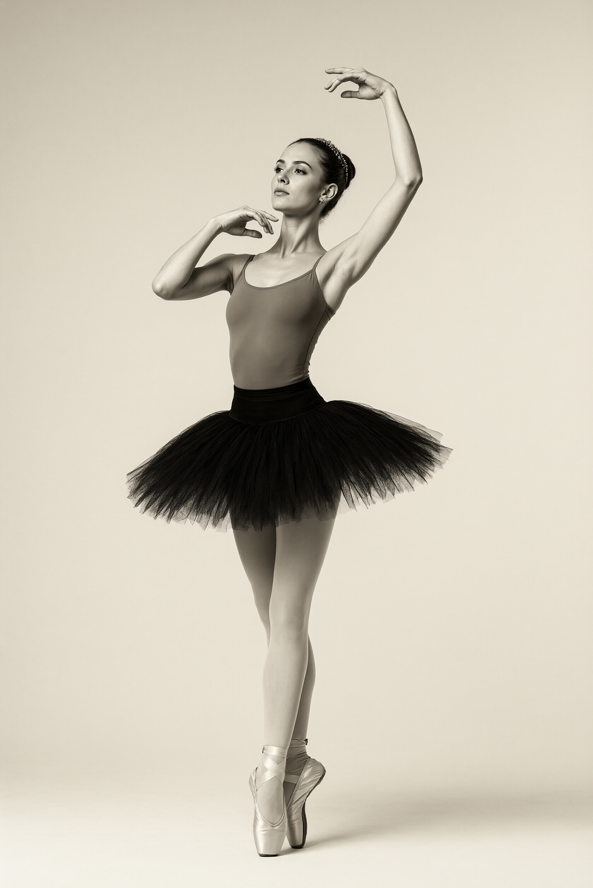
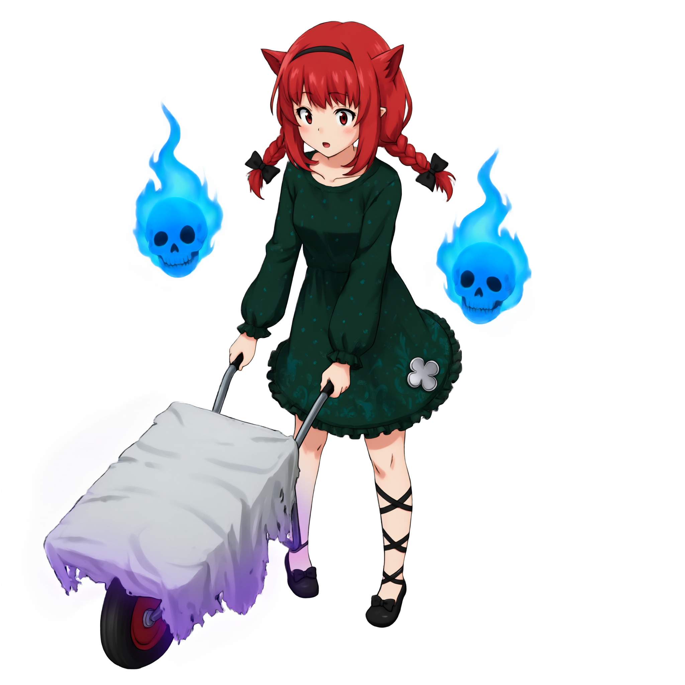
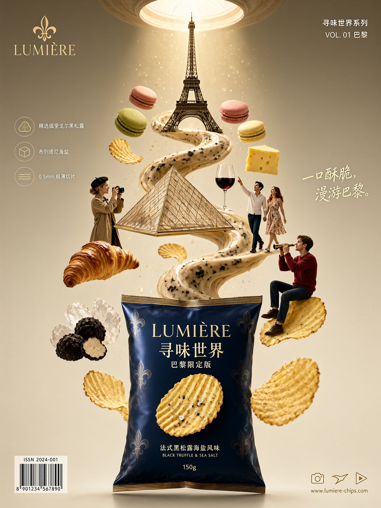
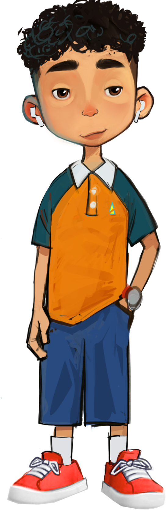
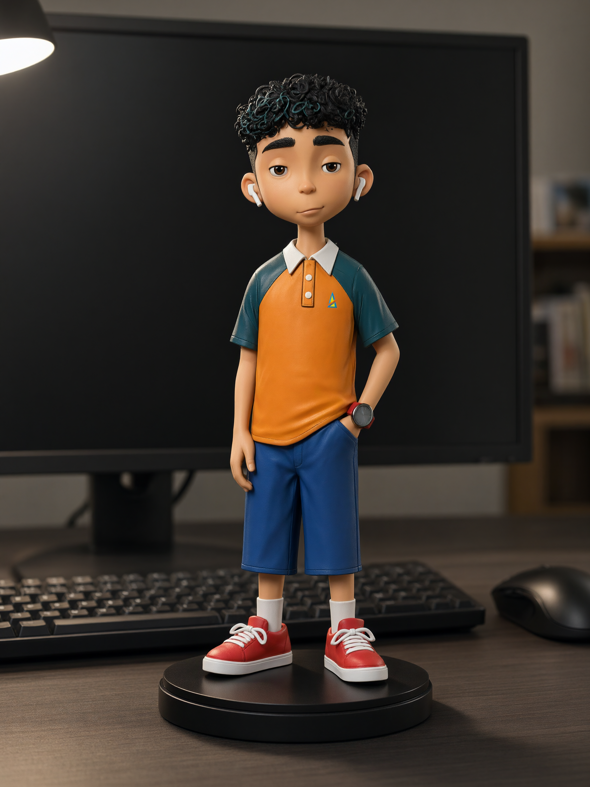
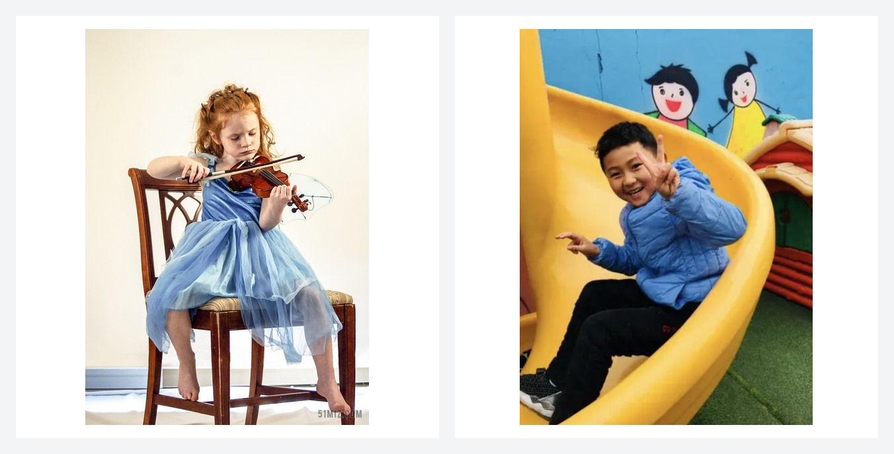
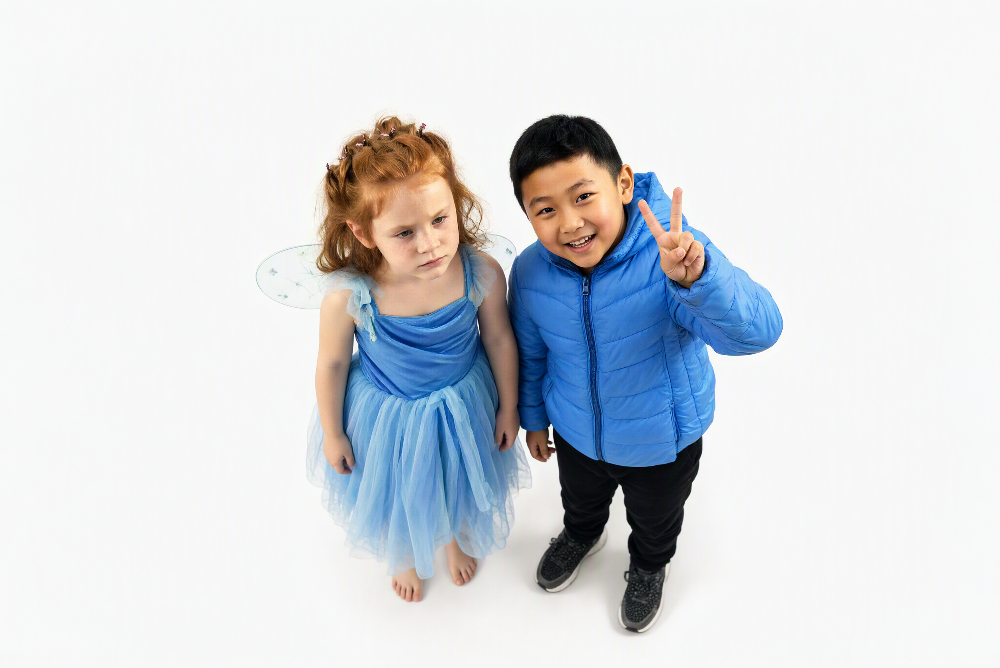
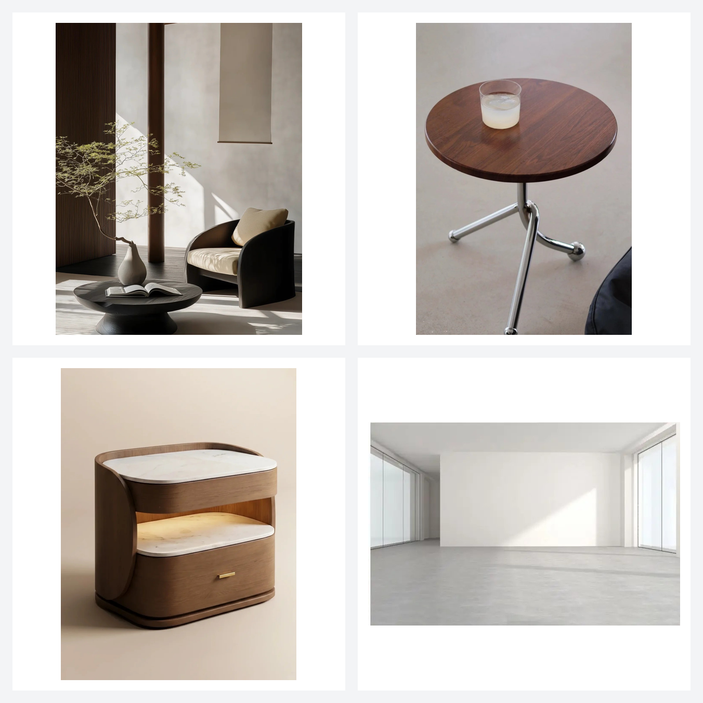
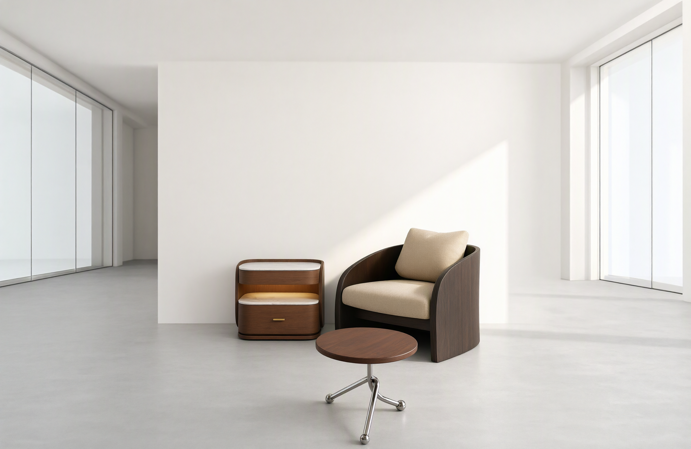

🤖 ModelScope | 🤗 HuggingFace | 💻 GitHub | 📑 Qwen-Image-2.1 Blog | Discord | 💬 WeChat
Introduction
Qwen-Image-2.1-Turbo is an accelerated checkpoint of Qwen-Image-2.1 for text-to-image generation and image editing with 8 denoising steps. It uses the same 7B visual generation architecture and loads directly with QwenImage21Pipeline in Diffusers.
The checkpoint includes its recommended sampling schedule, so it is ready to use without manually configuring the scheduler. Generation uses CFG=1 by default, and prefix KV caching reuses the text and reference-image context across denoising steps.
For more details, see the GitHub repo and Qwen-Image-2.1 blog.
Quick Start
Installation
Install a CUDA-compatible PyTorch build, then install the latest Diffusers source and the following dependencies:
bashpip install git+https://github.com/huggingface/diffusers.git pip install "transformers>=5.17.0" accelerate pillow
This checkpoint requires Diffusers with support for pipeline-configured sampling sigmas, added in PR #14950.
Text-to-Image
Load the checkpoint from Hugging Face:
pythonimport torch from diffusers import QwenImage21Pipeline pipe = QwenImage21Pipeline.from_pretrained( "Qwen/Qwen-Image-2.1-Turbo", dtype=torch.bfloat16, ).to("cuda") prompt = "A vertically oriented educational chemistry study poster fills the frame, designed like a hand-drawn classroom notes page with a clean white background, thick dark navy-blue outer border, and thin inner navy rectangular border lines. The overall aesthetic is colorful, high-contrast, and hand-lettered in a signature Topper style using marker and watercolor effects. At the top left, a small header in black handwriting reads \"Topper’s Notes\", accented by short decorative navy strokes radiating from it. Centered across the top is the main lesson heading in large stylized black-and-yellow bold lettering: \"Science – Chapter 1:\" followed below by the much larger title \"Chemical Reactions and Equations\". The title has energetic yellow highlighter strokes underneath and small sparkle doodles nearby. At the top right, inside a small outlined page-number box, the label reads \"Page X\". Below the header, a wide rounded rectangle framed in dark navy contains a pink brush-stroke highlight banner with the subheading \"IMPORTANT CHEMICAL EQUATION:\" in black. Inside the same equation panel, the reaction is written very large as \"Fe + CuSO₄ → FeSO₄ + Cu\". The symbol \"Fe\" is highlighted in bright orange with an underline, \"CuSO₄\" is vivid blue and underlined, \"FeSO₄\" is bright green and underlined, and \"Cu\" is metallic bronze and underlined. Beneath the left side of the equation is a lavender rounded label connected by a leader line to the iron component; it says \"Reactants\" and below it \"(before the reaction)\", with \"Reactants\" colored purple and underlined. Beneath the right side is a matching pale-green rounded label connected by a leader line to the products; it says \"Products\" and below it \"(after the reaction)\", with \"Products\" colored green and underlined. Along the lower part of this equation box are stylized ball-and-stick molecule models and atomic orbital drawings: a silver-gray sphere labeled \"Fe\" sits left of center, another cluster shows gray, red, and white spheres representing sulfate groups around blue and green atoms, and a copper-colored sphere appears near the right. Small atom-and-orbit icons sit along the bottom edge of the panel in blue, green, and brown outline styles. The middle portion is enclosed by a large dashed green rounded rectangle titled \"REACTIVITY CONCEPT\" in green uppercase letters with decorative rays. On the left side of this section, a stepped vertical reactivity-series ladder is drawn with alternating colored horizontal blocks. From top to bottom it lists \"K\", \"Na\", \"Ca\", \"Mg\", \"Al\", \"Zn\", \"Fe\" with a green oval callout reading \"(More reactive)\", then continues downward with \"Cu\", \"Ag\", \"Hg\", \"Pt\", \"Au\" with an orange oval callout reading \"(Less reactive)\". Each step is marked by a dark upward-pointing triangular arrow, showing decreasing reactivity downward. In the central-right area, full body text as follows: \"Iron (Fe) is higher in the reactivity series than Copper (Cu). This makes Iron more reactive.\" Below this definition is a visual arrow sequence of overlapping circles: orange \"Fe\" overlaps blue \"Cu\", followed by a red arrow pointing toward the phrase \"→ More displacement ↓ less reactivity\". Under it, a prominent statement in dark handwriting reads \"More reactive element displaces less reactive element\", emphasized with a bright pink marker underline. On the right, a shield-like badge with a navy outline and light interior contains the bold contrasting font label \"DISPLACEMENT REACTION\". Below the badge, full body text as follows: \"A more reactive element displaces a less reactive element from its compound.\" The badge includes an internal miniature illustration of circular electron shells and colored particles, reinforcing the chemistry theme. Directly below the reactivity concept box, a smaller rounded rectangular table titled \"PROPERTY COMPARISON\" compares Iron and Copper. The table has three columns: \"IRON (Fe)\", \"COPPER (Cu)\", and a central property column. Row one reads \"Reactivity series position\" with Iron shown as \"Higher (more reactive)\" and Copper shown as \"Lower (less reactive)\". Row two reads \"Displaces hydrogen from acids\" with Iron marked \"Yes\" and Copper marked \"No\". Row three reads \"Displaced by other metals\" with Iron shown as \"Displaced by Zn, Mg, Al, etc.\" and Copper shown as \"Displaced by Fe, Zn, Mg, etc.\". Row four reads \"Oxidation tendency\" with Iron shown as \"Gets oxidized easily\" and Copper shown as \"Does not get oxidized easily\". Row five reads \"Useful property\" with Iron described as \"Used where strength & corrosion resistance needed\" and Copper described as \"Used where conductivity & corrosion resistance needed\". The table uses thin navy grid lines, orange tinting for the iron column, pale blue tinting for the copper column, black condensed handwriting, and green checkmarks next to positive traits and red crosses next to limitations. The lower half introduces a large illustrated experiment section with a cream highlight behind the title \"BEFORE/AFTER IRON NAIL EXPERIMENT\" in bold dark navy uppercase letters. The section is split visually into a left \"Before\" state and a right \"After\" state. On the left, a beaker filled with bright blue solution contains a shiny silver iron nail standing diagonally. The beaker label reads \"CuSO₄(aq)\" in blue, and the bottom label near the nail reads \"Fe(s)\". A rounded annotation box beside the beaker says \"Initial State: Blue Solution & Silver Nail\". Two glass test tubes stand to the right of this beaker: the upper test tube is filled with blue solution and labeled \"CuSO₄(aq)\", while the lower one contains a pale green liquid. Red and blue directional arrows connect these visual elements to explanations: one red arrow points toward the nail with the text \"Copper gets deposited\", and one blue arrow points toward the liquid with the text \"Solution turns pale green\". On the right side of the experiment section, another beaker shows the after state with the iron nail now coated in brown copper deposits. Its solution is faded to a pale greenish-blue, and the beaker label reads \"FeSO₄(aq)\" in green. A nearby rounded annotation box says \"Final State: Pale Green Solution & Brown Coated Nail\". To the far right are additional test tubes and ion symbols: a test tube containing blue liquid labeled \"CuSO₄(aq)\" with the note \"Blue colour due to Cu²⁺ ions\", and a lower test tube containing pale green liquid labeled \"FeSO₄(aq)\" with the note \"Pale green due to Fe²⁺ ions\". Beside them are ion diagrams labeled \"Cu²⁺(aq)\" and \"Fe²⁺(aq)\", shown as colored charged particles encircled by simple electron-shell rings; the copper ion uses blue particles and the iron ion uses green particles. Small sparkles, arrows, and dashed guide lines emphasize the transformation from blue copper sulfate solution to pale green iron sulfate solution. Near the bottom, a horizontal summary strip has a blue star icon followed by the heading \"SUMMARY\". Full body text as follows: \"In this reaction, Iron (Fe) displaces Copper (Cu) from Copper Sulphate (CuSO₄) solution to form Iron(II) Sulphate (FeSO₄) solution and Copper (Cu).\" To the lower left, a bordered key-points box titled \"KEY POINTS\" lists three starred bullet statements: \"Iron is above copper in the reactivity series.\", \"Fe displaces Cu from CuSO₄ solution.\", and \"Result: Blue solution turns pale green; copper metal deposits on iron nail.\" At the very bottom, inside the footer border, spaced text reads \"CHEMISTRY • CHANGE IS EVERYWHERE • TOPPER’S NOTES\", flanked by small leaf-like ornaments and thin horizontal divider lines. The entire page uses dark navy borders and headings, bright highlighter strokes, watercolor shading, realistic glassware illustrations, and playful scientific doodles to present a chemistry lesson clearly and attractively." image = pipe( prompt=prompt, width=1696, height=2528, use_kv_cache=True, generator=torch.Generator("cpu").manual_seed(42), ).images[0] image.save("t2i.png")
The pipeline automatically uses the checkpoint's saved 8-step schedule. The text-to-image example uses 1696 × 2528 portrait resolution; the editing example uses 2048 × 2048.
Image Editing
Reuse the pipeline above to turn a yacht sketch into a photorealistic image:
pythonfrom diffusers.utils import load_image input_image = load_image( 'https://huggingface.co/Qwen/Qwen-Image-2.1-Turbo/resolve/main/assets/turbo-boat-input.png' ).convert("RGBA") edit_prompt = "Create a photorealistic photograph of the motor yacht from the input sketch, sailing on open sea, captured in full side profile with the camera at water level. Build the vessel with the structure shown in the input sketch: a long low hull; one tall mast stepped forward with a small cross-tree platform near its top; a wheelhouse superstructure with an open bridge wing just behind the mast; a midships deckhouse carrying a row of four rectangular windows with a lifeboat stowed on its roof; a rectangular funnel behind that deckhouse; an aft deckhouse with a row of three rectangular windows and a second lifeboat above it; thin railings along every deck edge; the hull side pierced by one small square window at the bow, an upper line of five round portholes on the raised forward section, and a lower line of nine round portholes along the main hull. Paint the hull black, the superstructures and the mast white, and the funnel yellow. Set the yacht broadside on a calm deep-blue sea with a low gentle swell and a thin white wake trailing from the bow, the straight horizon crossing behind the funnel top, under a clear sky with soft scattered clouds; sunlight from the front left lights the white superstructures and leaves a bright reflection path on the water beside the hull with a soft contact shadow along the waterline; the entire vessel fits inside the frame with open water in the foreground and sky above." image = pipe( prompt=edit_prompt, image=input_image, width=2048, height=2048, use_kv_cache=True, generator=torch.Generator("cpu").manual_seed(20261009), ).images[0] image.save("edit.png")
Sampling
The recommended 8-step sampling schedule is saved with the checkpoint and loaded automatically. Setting num_inference_steps alone does not override it. For experiments, an explicit call-time sigmas argument overrides the saved schedule; other schedules have not been evaluated for this checkpoint.
Supported Aspect Ratios
Use the same resolution presets as Qwen-Image-2.1:
pythonaspect_ratios = { "1:1": (2048, 2048), "4:3": (2400, 1792), "3:4": (1792, 2400), "3:2": (2528, 1696), "2:3": (1696, 2528), "16:9": (2752, 1536), "9:16": (1536, 2752), }
Showcase
Examples from the 8-step outputs in our Turbo showcase. Each category features one example.
Portrait Photography
Human Poses and Motion

Transparent Image Generation

Typography and Poster Design

UI and Information Layout
Single-Image Transformation
Input

Output

Multi-Reference Composition
Input

Output

Four-Image Interior Composition
Input

Output

License
This model is licensed under the Qwen Research License Agreement.
Feedback
Having issues with Qwen-Image-2.1-Turbo? Our official feedback form connects you directly with the Qwen Image research team. Share your prompts, images, or workflows to help us investigate and improve.